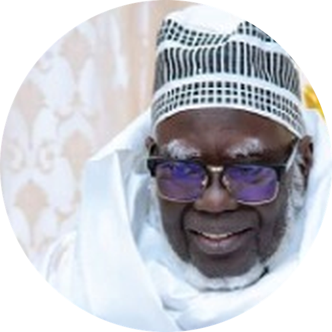

02
Invitation officielle
2027 · Foi. Spiritualité. Fraternité.
Samedi 2 janvier 2027.
Garack — Commune de Rosso, Région de Trarza · Cérémonie officielle dès 17 h
Découvrir l’événementLes temps forts.
17h
Cérémonie officielle. Mots de bienvenue, allocutions des délégations, de la mairie de Rosso, du député et du wali du Trarza, dès 17 h.
00h
Soirée religieuse. Récitation, enseignements, exhortations et prières jusqu’à l’aube.
✦
Des voix inspirantes. Serigne Khadim Kébé, Serigne Moustapha Seck (Touba TV) et Serigne Fallou Tine.
❝
Un thème fort. Spiritualité et citoyenneté à la lumière des enseignements de Cheikh Ahmedou Bamba, au service de l’unité nationale, de la stabilité et du développement.
▶
Revivez l’édition précédente. Deux films : la cérémonie officielle et l’accueil populaire.
Regarder ›L’invitation
Une invitation à se rassembler.

Sous le haut patronage du Chef du village et des notables de Garack, le Comité d’Organisation a l’honneur de vous convier à la grande célébration du Gamou de Garack, qui se tiendra le samedi 02 janvier 2027. Ce rendez-vous spirituel sera un moment de dévotion, de prières et de communion fraternelle, dans le respect des enseignements de l’Islam et des valeurs de la confrérie mouride.
Plus que quelques instants.
00jours
00heures
00minutes
00secondes
avant la cérémonie officielle, le samedi 02 janvier 2027 à 17 h.
Programme provisoire
Une journée. Une nuit.
Samedi 2 janvier 2027 · Garack — Commune de Rosso, Région de Trarza
HoraireDéroulementIntervenants
Accueil et installation des invités et du public.
Commission accueilOuverture de la cérémonie officielle par la lecture du Saint Coran.
Imam ratib de Garack (El Hadj Cheikh Brahim Fall)Mot de bienvenue : comité d’organisation
Président Madine Bouna FallMot de bienvenue : chef du village
Serigne Aline Mame FallAllocutions des délégations de Oulad Cherif Boubezoul
4 représentants désignésLecture de l’exposé sur l’histoire de Garack
À désignerAllocution des délégations de Tigmatine et Tounguène
Dr Cheikh Ahmedou Bamba Saer et El Hadj Lamine FallAllocution de la mairie de Rosso
Monsieur le Maire de RossoAllocution du député de la Moughataa de Rosso
L’honorable Amet RokhayaAllocution du wali du Trarza
Le WaliSynthèse et clôture de la cérémonie
À désigner
Ouverture par les dahiras de Garack.
Prestation des chanteurs individuels de Garack.
Mot de bienvenue de l’Imam Ratib
Mot de bienvenue et de remerciements du président du comité d’organisation
Message du chef de village de Garack
Prestation des Tidjanes
Prestation du duo Serigne Moustapha Seck (Touba TV) et Serigne Fallou Tine
Animation assurée par Serigne Khadim Kébé et son équipe jusqu’à l’aube.
Prière et clôture du Gamou.
Trois moments. Une seule nuit.
17hCérémonie officielle
00hSoirée religieuse
AubeClôture du Gamou
Films
Revivez l’édition précédente.
La cérémonie officielle
L’accueil populaire
Questions ? Réponses.
Quand a lieu le Gamou de Garack 2027 ?
Le samedi 2 janvier 2027. La cérémonie officielle est annoncée à partir de 17 h ; selon le programme, l’accueil des invités commence à 17 h 15 et l’ouverture a lieu à 17 h 40.
Où se déroule l’événement ?
À Garack — Commune de Rosso, Région de Trarza.
Qui anime la soirée ?
Serigne Khadim Kébé est l’animateur de la soirée, avec la participation du duo Serigne Moustapha Seck (Touba TV) et Serigne Fallou Tine.
Quel est le thème de cette édition ?
Spiritualité et citoyenneté à la lumière des enseignements de Cheikh Ahmedou Bamba, au service de l’unité nationale, de la stabilité et du développement.
Comment contacter le comité d’organisation ?
Par WhatsApp au 33 97 24 32.